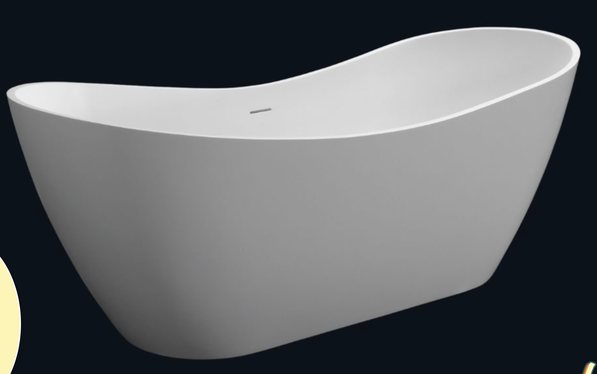

原照片

對照重點：右端大幅抬升並向後捲、左端小幅抬升、中央缸緣最低；外壁向底部收縮；缸口薄邊。
本次參數化版本（—）
原始 AI 示範（唯讀對照，reference/codex-bathtub-3d.html）
下方載入原始示範的未修改副本，供造型比對。
形狀參數
JSON 存檔／重載（schema：photo2tub-lab-shape-v1）
驗證：JSON 載入 A→B 是否與直接載入 B 一致
先直接建構 fixtures/test-variant-b.json 的幾何並記錄雜湊； 再依序完整載入 fixtures/reference-shape.json、fixtures/test-variant-b.json 後重新記錄雜湊； 兩者位置陣列雜湊必須相同，才代表完整匯入沒有殘留前一個模型的欄位。